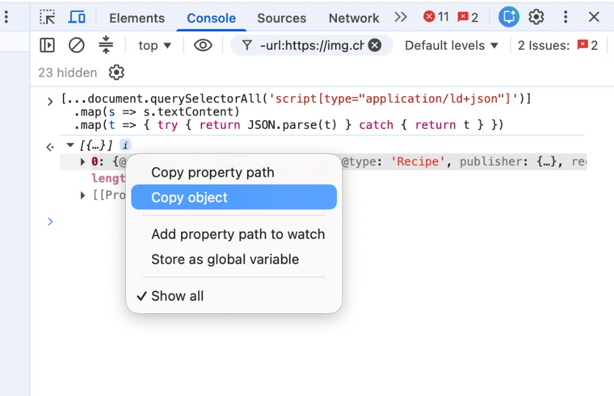

Rezept-URL eingeben und automatisch laden – oder im Notfall JSON manuell aus der
Browser-Konsole kopieren. Aus beiden Wegen wird lesbares Markdown erzeugt.
★ Schnellweg: URL eingeben
Gib die Adresse der Rezeptseite ein – die Seite sucht automatisch nach dem
eingebetteten JSON-LD-Rezept und füllt Schritt 2 für dich aus.
Funktioniert bei den meisten Rezeptseiten (Chefkoch, Zucker&Zimt, Familienkost …).
Klappt es nicht, nutze unten die manuelle Methode. Beim Laden wird die Seite über
einen öffentlichen Proxy abgerufen – nur die URL, kein Login.
1 Manuell: JSON-LD aus der Konsole
Nur nötig, wenn der Schnellweg oben nicht funktioniert.
Viele Rezeptseiten bieten strukturierte Daten im JSON-LD-Format.
Um diese zu importieren:
Öffne die Rezeptseite in deinem Browser.
Öffne die Entwicklerkonsole:
Chrome / Edge:Cmd ⌘ + Option ⌥ + I (macOS) oder F12 (Windows)
Firefox:Cmd ⌘ + Option ⌥ + I (macOS) oder F12 (Windows)
Wechsle zum Tab Konsole / Console.
Führe folgenden Befehl aus (kopieren mit dem Button):
In der Ausgabe den Teil mit "@type": "Recipe" suchen.
Mit Rechtsklick → Objekt kopieren (Chrome) bzw. den kompletten
{ … }-Block markieren und kopieren (Firefox).

So sieht es in Chrome aus: Rezept-Objekt aufklappen, Rechtsklick →
Copy object (Objekt kopieren).
2 JSON prüfen oder einfügen
Wird beim Schnellweg automatisch befüllt – oder hier den kopierten Recipe-JSON-Text einfügen:
3 Markdown-Ergebnis
Das Ergebnis ist sortiert in drei Teile: Rezeptinfo, Zutaten, Zubereitung – hier auch bearbeitbar.
Tipp für Word: Markdown kopieren → in Word einfügen (Cmd ⌘ + V).
Überschriften und Listen werden meist automatisch erkannt. Alternativ in einem
Texteditor speichern als .md-Datei.
4 Rezeptseite & PDF
Aus dem Markdown (auch nach Bearbeitung) entsteht eine saubere Rezeptseite im
Kochbuch-Design – wie im Projekt 3_rezepte.
PDF: „Als PDF speichern“ öffnet den Druckdialog → Ziel
Als PDF sichern wählen (Chrome/Safari/Firefox).